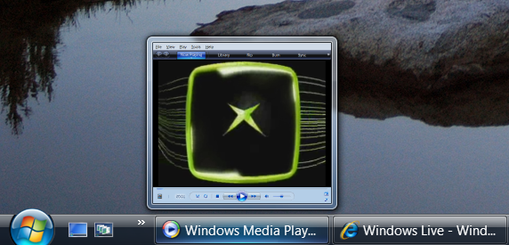
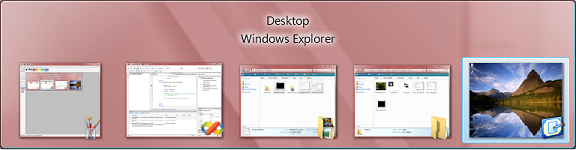

title: DWM Thumbnail Overview description: Desktop Window Manager (DWM) enables the display of thumbnail representations of application windows. ms.assetid: 6d71fcda-0cf0-463c-8c60-0415109d154f keywords:
Desktop Window Manager (DWM) enables the display of thumbnail representations of application windows. These are not static snapshots of a window, but are instead dynamic, constant connections between a thumbnail source window and a location on a destination window that receives the live thumbnail rendering. This allows a quick view of running applications by hovering over the application on the taskbar or using the ALT-TAB key gesture to see and quickly switch to an application.
The following image illustrates the Windows Vista live thumbnail seen when you hover over the application on the taskbar.

The following image illustrates the Windows Vista Flip (ALT-TAB) enabled by DWM.

[!Note]
DWM thumbnails do not enable developers to create applications like the Windows Vista Flip3D (WINKEY-TAB) feature. Thumbnails are rendered directly to the destination window in 2-D.
Â
To display thumbnails in your application, you must first establish a relationship between a source window and a destination window. This is done by calling the DwmRegisterThumbnail function.
DwmRegisterThumbnail does not render a thumbnail on the destination window but merely creates the relationship and provides the thumbnail handle. The thumbnail is rendered after the DWM_THUMBNAIL_PROPERTIES have been set and the DwmUpdateThumbnailProperties function has been called. Subsequent calls to DwmUpdateThumbnailProperties update the thumbnail with a new set of properties. The DWM also provides the helper function DwmQueryThumbnailSourceSize to obtain the size of the source window from the thumbnail.
To end a thumbnail relationship, call the DwmUnregisterThumbnail function.
The following example demonstrates how to create a releationship with the Windows desktop and display it in an application.
HRESULT hr = S_OK;
HTHUMBNAIL thumbnail = NULL;
// Register the thumbnail
hr = DwmRegisterThumbnail(hwnd, FindWindow(_T("Progman"), NULL), &thumbnail);
if (SUCCEEDED(hr))
{
// Specify the destination rectangle size
RECT dest = {0,50,100,150};
// Set the thumbnail properties for use
DWM_THUMBNAIL_PROPERTIES dskThumbProps;
dskThumbProps.dwFlags = DWM_TNP_SOURCECLIENTAREAONLY | DWM_TNP_VISIBLE | DWM_TNP_OPACITY | DWM_TNP_RECTDESTINATION;
dskThumbProps.fSourceClientAreaOnly = FALSE;
dskThumbProps.fVisible = TRUE;
dskThumbProps.opacity = (255 * 70)/100;
dskThumbProps.rcDestination = dest;
// Display the thumbnail
hr = DwmUpdateThumbnailProperties(thumbnail,&dskThumbProps);
if (SUCCEEDED(hr))
{
// ...
}
}
return hr;
Desktop Window Manager Overview
Enable and Control DWM Composition
Performance Considerations and Best Practices
Â
Â